Linear and circular DNA sequences
This exercise will give you a review of the basic functions of the ApE plasmid editor and how to visualize linear and circular DNA sequences.
ApE is a free, simple to use DNA sequence editor written by Wayne Davis at the Department of Biology, University of Utah.
ApE is quick and intuitive (IMHO) and has all the tools and functions you need to design your cloning strategies without having too many features getting in the way.
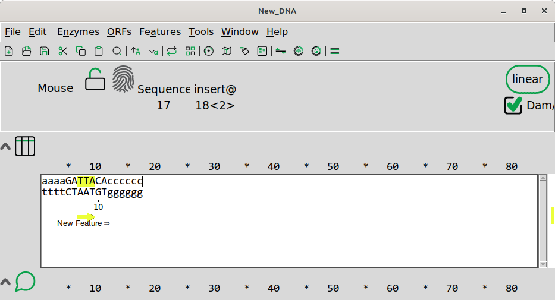
Install ApE
If you have already installed ApE, skip to the next section “Enter a sequence in ApE”.
- Go here or Google “ape plasmid” to find the download page.
- On the top of the page are symbols for OSX or Windows.
- Click on the symbol for your operating system at the top of the page:
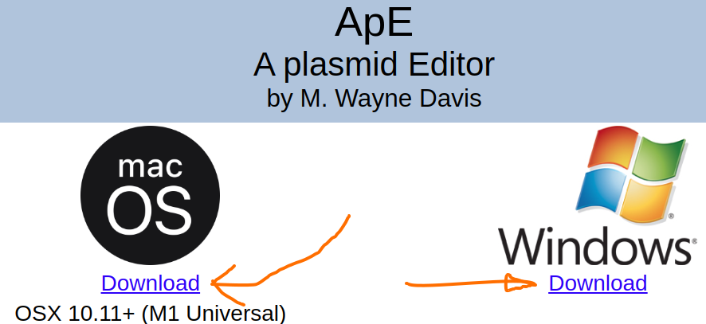
The file for Windows is called “ApE_win_current.zip”, download this file. Unzip the file, in the resulting folder you will have a file called “ApE.exe”. You can use ApE.exe directly without installation. Run it by clicking on it. You should see something like the window below when open.

Enter a sequence in ApE
You can enter sequence directly into ApE by placing the cursor in the text window and typing using the letters “a”, “g”, “c”, “t” or “n”.
These letters represent the four bases of DNA and “n” represents an unknown base. These five letters in upper and lower case are the only ones permitted by ApE.
Enter the sequence “GATCNgatcn” in the ApE window like below:
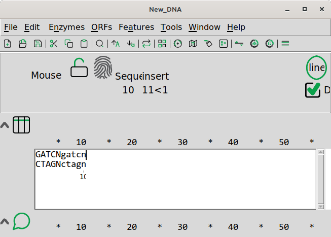
ApE assumes that DNA is double stranded and the complementary base is generated automatically.
5-GATCNgatcn-3 (watson)
||||||||||
3-CTAGNctagn-5 (crick, generated automatically)
The top strand is always presumed to be in the 5’ to 3’ direction.
We can change the point of view of out molecule by clicking the button on the toolbar OR choose Edit>Reverse-Complement from the menu. Now you should see the sequence shown below:
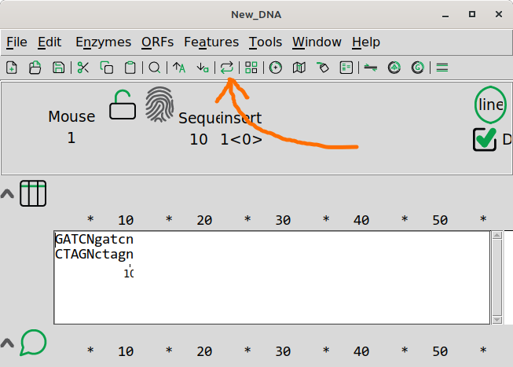
The reverse complement should look like this:
If you click the button again or choose Edit>Reverse-Complement, you will see “GATCNgatcn” again. These are two equally valid representations of the same DNA molecule. The sequence does not change in any way after this operation. We only choose which way we see the double stranded DNA molecule.
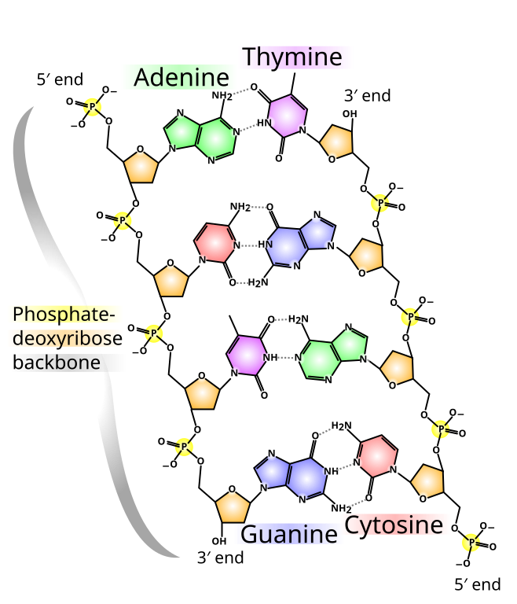
Question 1: If you would want to represent the DNA sequence of the molecule above, which letters would you use? There are two correct answers.
Question 2: Can you think of a type of DNA or RNA molecule that does not have a complementary strand?
Visualizing circular DNA with ApE
DNA can be either linear (like a human chromosome) or circular (like most plasmids). This structure can not be determined from the primary sequence. For this reason, we have to tell ApE whether the DNA is linear or circular.
If the sequence GATTACA and Click on the “linear” button. The molecule is now circular meaning that there is a bond between the last A/T and the first G/A base pairs.
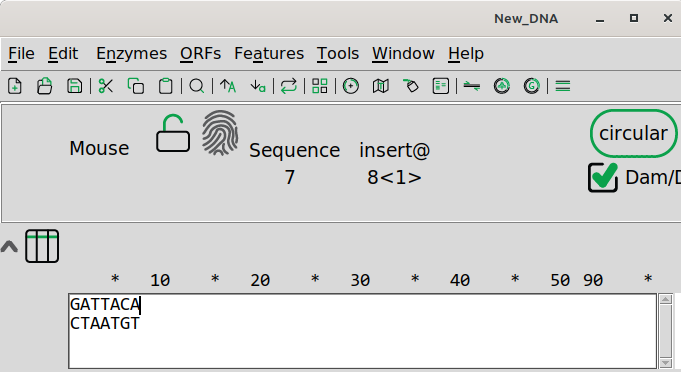
Click the “Graphic map” icon on the toolbar OR choose “Enzymes>Graphic map” from the menu. You should see a new window appearing showing a circular molecule of 7 bp.
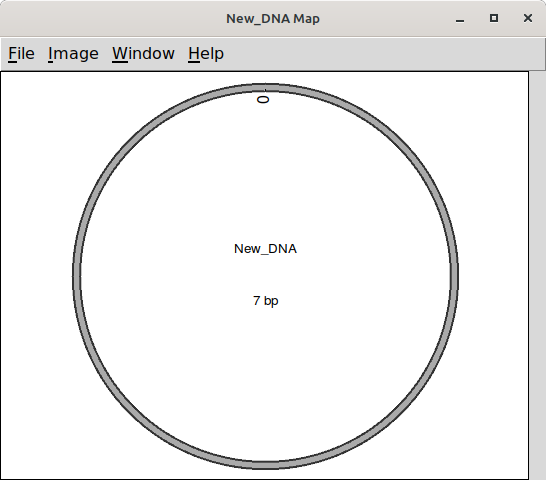
IMPORTANT
Always select the correct topology (linear or circular), as this is important for simulation of restriction analysis.
Change origin for a circular DNA molecule The origin of a circular DNA molecule is the first base pair in the sequence. We can change this by setting the origin.
First put the cursor where you want the new origin, for example between the second A and the third T:
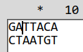
Then select Set Origin from the Edit menu:
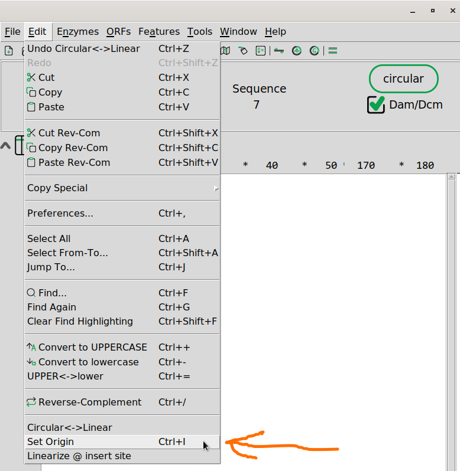
The new visualization should be:
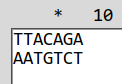
Question 3: Change the origin of circular sequence below so that it starts with tacta… What are the the last four nucleotides of the new sequence?
tgcagtcagtcagtactatcgtgtcgcta
Display a sequence file for the E. coli plasmid vector pUC19
The circular plasmid pUC19 is a popular cloning vector for E. coli. Download the pUC19 raw sequence here. Raw means that the file only contains the nucleotides of the sequence. The sequence is 2686 bp long. Open the sequence in ape by copy-paste or by using the file/open function in ApE.
The sequence should look like below. The sequence is also available at Genbank with accession number L09137.
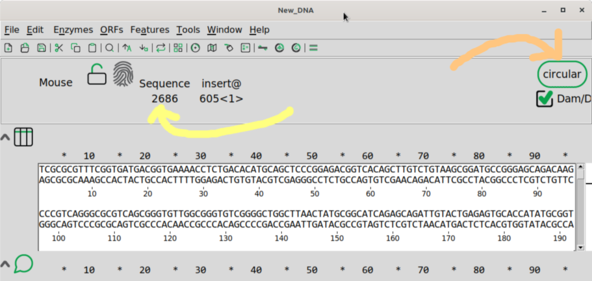
ApE also has the seguid checksums built in. Click on the fingerprint symbol:
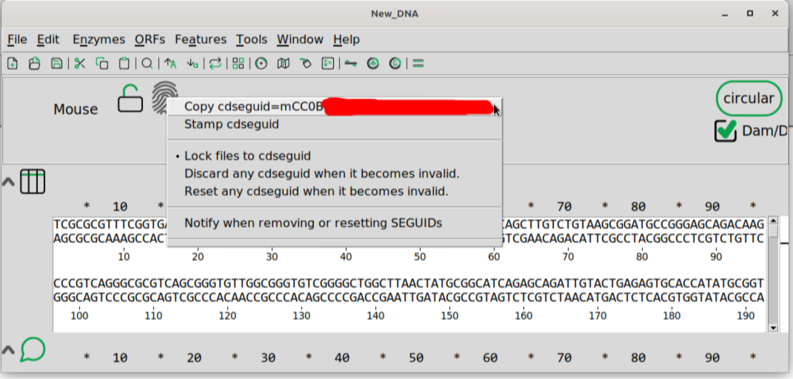
Question 4 The partial checksum for the sequence is cdseguid=mCC0B3U. What is the complete checksum? Use the fingerprint button as shown above.
Question 5: Change the origin of the pUC19 sequence as indicated below:
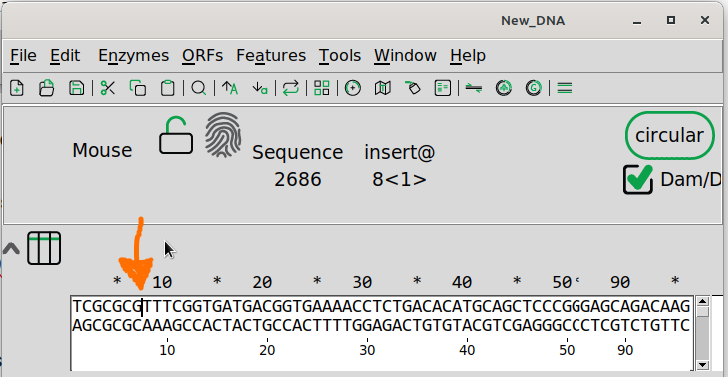
Now the sequence should start with “TTTCGG…”. The new sequence should have the same size as before, 2686 bp.
Question 6: What is the checksum for the new sequence?
Adding a DNA sequence feature
A DNA sequence feature refers to any specific region or element within a DNA sequence that has a defined biological function or structural significance.
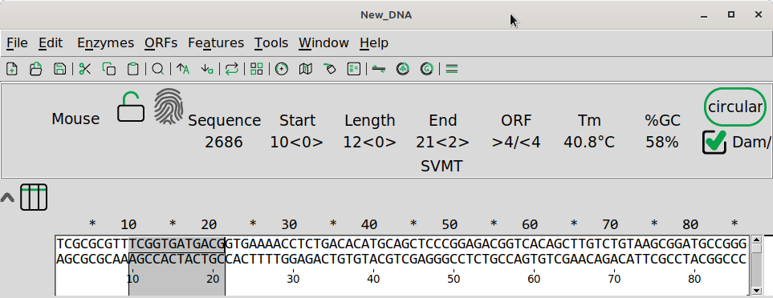
Create your own feature by selecting a portion of the sequence as above.
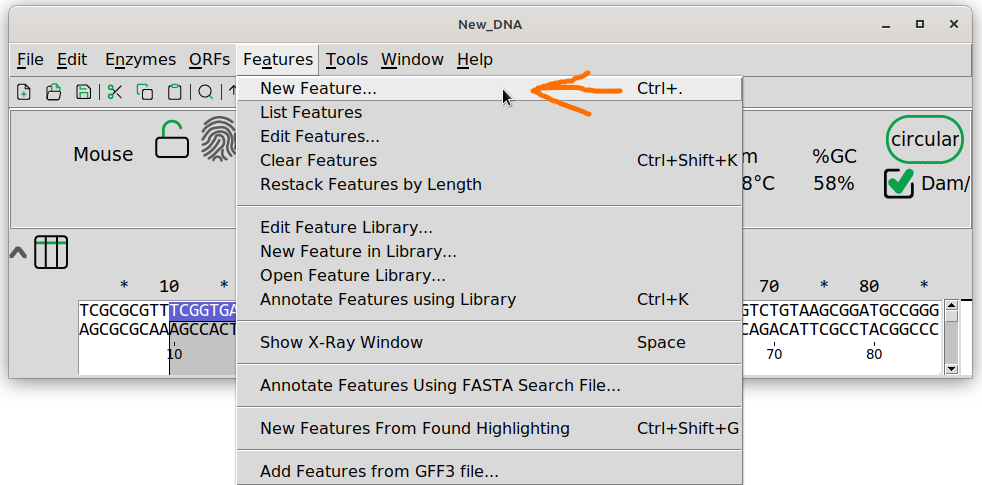
Select Features>New Feature ... from the menu as shown above.
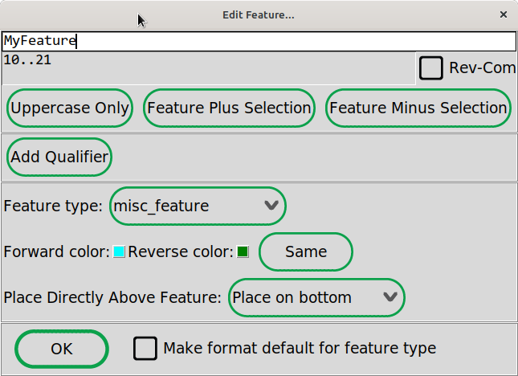
Give you feature a new name as above and click .
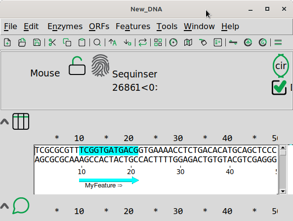
Afterwards, a portion of the sequence is marked by highlight in the color you chose as well as an arrow in the same color.
ApE has of course many more features than was covered in this tutorial. If you are interested, there are some good tutorials on-line as documents or videos. There are links to these tutorials at the end of this document. There are many tutorials on YouTube. These were made by the creator of ApE. See also this blog post about cloning a cDNA in the pCR Blunt II TOPO vector.
You can copy the sequence of the feature as show below by right-clicking on top of the feature in the sequence and selecting Copy Feature.
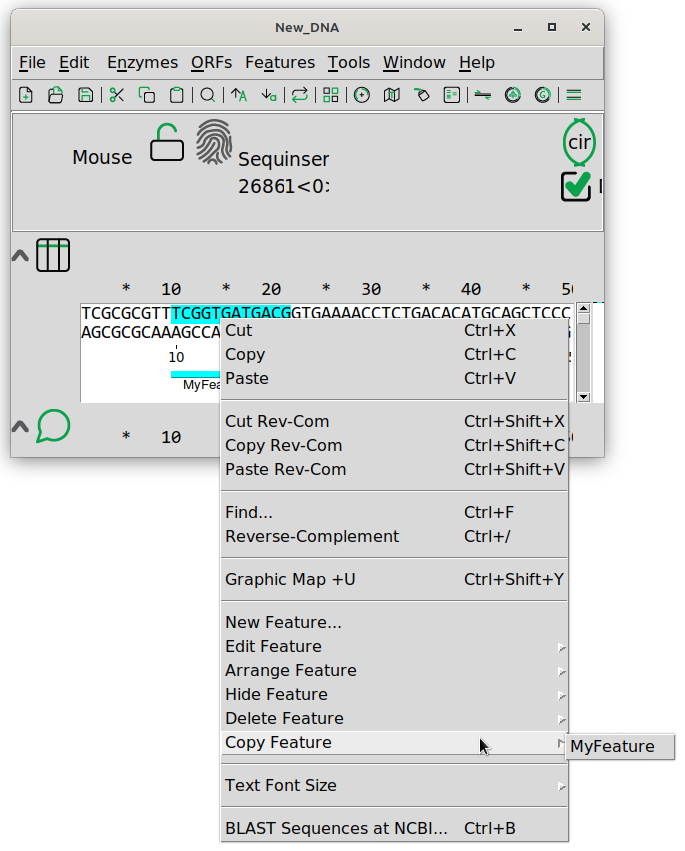
Question 7:
What is the seguid for the feature in the previous example? Use the trick shown above.
Question 8:
This is an individual exercise for each student. The input data can be found in The TP02 Google spreadsheet where you can find your name in the leftmost column.
One column called Sequence1 contains a DNA sequence that represents a double stranded circular DNA molecule. Change the origin of this molecule so that it starts with the sequence indicated in the “New origin” column.
Put your answer in the “Answer” column. Please answer with a raw DNA sequence as indicated for the first example student “Max Maximus”.
Alternatives to ApE
ApE is a popular editor which is free, stable and fast. It also seems to work well on all operating systems. There are alternatives with more features that you can use if you want. Note that all TP classes will assume that you have ApE. There is a compilation of alternatives on researchgate.
Some popular alternatives are:
- Benchling (Free, online only)
- Serial Cloner (Free, offline) (Win, Mac, Linux)
- SnapGene (Free trial period, offline) (Win, Mac)
© Björn Johansson 2013-2026